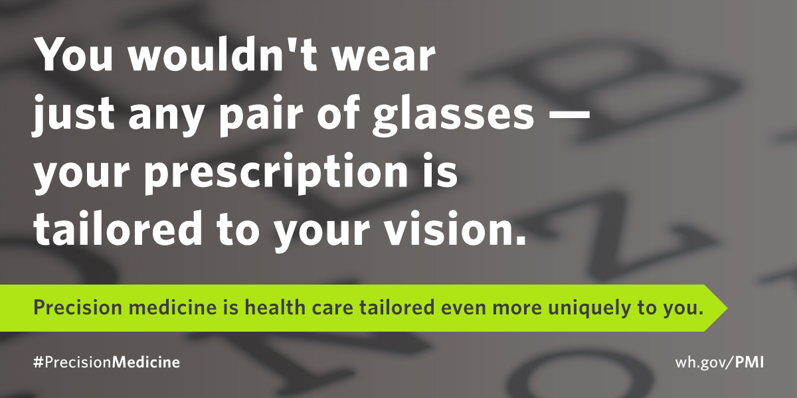

The itinerary for the day is shown below:
Precision Medicine Initiative was announced last year to make strides towards delivering personalized treatments to patients, taking into account the history, genes, environments, and lifestyle of individuals. Presently, advances in molecular testing for cancer patients lets physicians and patients select treatments that improve chances of survival and reduce adverse effects. Being able to select therapies that are designed to target specific markers or symptoms may provide the best treatment. But we can do better. In the near future, genetic testing will become 10x cheaper and ubiquitous: Along with the history, we will also be storing the patient's genome in the patient file.
The goal of this event is to highlight the importance of opening research data and the crucial need for creating new tools to allow citizen scientists to become engaged and participate in research. This event would be structured similarly to a mini-symposium, beginning early in the morning and ending early-afternoon. The symposium is open to all students, staff and faculty and will be led by faculty and student-researchers across various disciplines.
